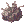

Illusion
Jump to navigation
Jump to search
- This page refers to the Episode 17.1 - Illusion. For information on Illusion Dungeons, see Illusion Dungeons.
Illusion
Rudus Investigation
| Requirements | |
|---|---|
| Base Level: | 110 |
| Starting Point: | |
| Prerequisite(s): | Step 1 of Learning About the Families If you cannot see Nyhill in your room, you've already spoken with him. Move on to step 3 of this guide. |
| Rewards | |
| Experience: | 20,000,000 (Base) and 20,000,000 (Job) |
| Items: | 15  Cor Cores Cor Cores
|
As of 09/18/2020, you do not need to do episode 16's questline to do the episode 17.1's questline. However, you need to access your room in the Prontera castle to speak with Nyhill, which requires you to do Step 1 of Learning About the Families. If you do not see Nyhill in your room, then you've already spoken with him. Move on to step 3 of this guide.
- Go to your room inside the Prontera Castle (@go woe, then walk north). Your room is the bottom one, on the left wing .
- Speak with Nyhill M. Heine in the room. He tells you Peter isn't doing too well and that he's now next in line to the throne.
- Go near the entrance of Clana Nemieri, in Einbech , and a Rebellion Crew member will apear. Speak with him to gather information about the new base of operation.
- Head to the pub, Cat on Bullet , in Einbroch.
- Go inside and speak with Philofontes . He tells you he found an entry to the abandoned waste of Rudus.
- Rudus's entrance is located at . Speak with the Rebellion Crew over there to let you in.
You now have access to the Morning daily quest. - Speak with Elena Bolkova near the entrance. She tells you there is a barrier blocking the way.
- Walk south and speak with Lucky, in front of the barrier.
- There are 3 locations you need to gather information from which are shown on your minimap:
- A Rebellion Crew member at .
- A Rebellion Crew member at .
- A Small Hole at .
- Return to Lucky once you've checked out all of these locations. He managed to unlock the doorway, so you can now speak with the Firmly Closed Door to access the other side.
- There are strange noises beyond the barrier and he wants you to find the source of it. You will need to hunt down the following monsters:
- 10 Dolors.
- 10 Venenums.
- 10 Twin Caputs.
- Once you're done, speak with Elena Bolkova near the entrance. You will be rewarded with 15 Cor Cores and some experience.
- You can continue the quest with Securing Regenschirm.
Securing Regenschirm
| Requirements | |
|---|---|
| Base Level: | 110 |
| Starting Point: | |
| Prerequisite(s): | Rudus Investigation |
| Rewards | |
| Experience: | 25,000,000 (Base) and 20,000,000 (Job) 5,000,000 (Base) and 5,000,000 (Job) - Optional |
| Items: | 25  Unknown Parts Unknown Parts
|
- Report your results back to Philofontes inside Cat on Bullet. There is a new guest that arrived in the other room.
- Talk to the Retired Rebellion on your right to enter the room.
- Speak with Philofontes inside the room. You learn that the Regenschirm laboratory has been captured by Heart Hunters.
- Speak with the Middle-Aged Gentleman next to Philofontes. He wants to introduce himself and he tells you he's the Vice President of Rekenber, known as Kaya Toss.
- Go at the entrance of Regenschirm , next to the Rekenber's Heardquarters in Lighthalzen.
- Speak with the Republic Guard. After preparing for the recapture of the laboratory, Oscar will let you in.
- While in a party, talk to Rekenber Guard Oscar next to the portal and select Generate Regenschirm to start the instance. Talk to him again to enter.
- Move up a little and speak with Ashley. You'll be warped to the main hall room.
- Kill all enemies in the nearby areas. Don't forget the common room at the bottom left. Every single Special Guard must be killed to continue.
- Go to the restaurant room (on the left, coordinate 58 138), and then click on the Access Controller near the door.
- Talk to the Researcher right next to you so that he can open the door. You'll be warped to hallway.
- Walk north clear the left side from all the Deadly Poisonous Gas. There will be an announce afterwards signaling the portal is now unlocked.
- Enter the conference room on the left and speak with Erst. She gives the code 0315.
- Use the code on the Access Controller to your left and wait for the cutscene to finish.
- Get out of the conference room and head to the bottom right part. You will find more Deadly Poisonous Gas that you have to clear.
- Once all the gas has been cleared, you'll be able to access the nearby rooms.
- Start with the first room at and speak with Detained Researcher.
- Move to the room below and speak with the other Detained Researcher.
- Do the same step as above for the next room.
The third one doesn't disappear after talking to him. - Go to the last room at the bottom and you'll find Ashley waiting for you. Speak to her. Don't forget to take the Scattered Documents on the desk by clicking on them.
- Leave the room and head to the Central Room, at >. Click on the Central Room to make Ashley and the others appear.
- Speak with Alshey and watch the cutscene. Speak with her again when it's over and select Enter.
- Walk up near the Restrained Specimen to trigger the next step.
- There are 4 control devices in this room. Here is the correct order (if you make an error, you can just redo the same step, you do not start over):
- Top right control device > Blue Button.
- Bottom left control device > Red button.
- Bottom right control device > White Button.
- Top left control device (near the Restrained Specimen, on the wall) > Yellow Button.
- The Restrained Specimen will go loose, kill it to proceed.
- Ashley will appear again, south of the room. Talk to her and select Move to Einbroch.
- Speak with Philofontes inside Cat on Bullet. He will reward you with 25 Unknown Parts and some experience.
If you grabbed the Scattered Documents from earlier, you can speak with Philofontes again to get more experience. - You can continue the quest with Investigating Rekenber.
Investigating Rekenber
| Requirements | |
|---|---|
| Base Level: | 110 |
| Starting Point: | |
| Prerequisite(s): | Securing Regenschirm |
| Rewards | |
| Experience: | 22,500,000 (Base) and 22,500,000 (Job) |
| Items: | 20 Cor Cores
|
- Speak with Reiji inside the pub, at . He's arguing with Kaya Toss about the documents provided and they refuse to believe one another.
- Speak with him again down below to know what's happening.
- Speak with Kaya and make a proposal with him. You're suggesting to bring together Reiji, Kaya and yourself to investigate the issue.
- Talk with Reiji. Kaya joins the discussion and accepts the proposal. You'll be rewarded with some experience.
- Head to the Einbroch Airport at and then speak with Reiji. Kaya decided to investigate the whereabouts of Patrick Kaufman.
- Find Reiji in Lighthalzen at .
- Go to Patrick's House at and speak with Reiji.
- Go near the Rekenber's Headquarters at and speak with Reiji.
- Go inside the Headquarters up north. Speak with the Staff member after you enter.
- Walk up to the 2nd floor, on the east side and go to . Speak with another Staff member.
- Go to Regenschirm, the building left of the Headquarters .
- Speak with the Laboratory Staff on the right side.
- Go to the common room on the bottom left and speak with the Staff member. He doesn't know where Patrick was transffered, so he sends you back to the Office.
- Go back to the Headquarters and talk to the Secretary at . He tells you to check out the document storage room to find information.
- Go to the top left room and speak with the Staff at . You decide to split your search and you're going with Kaya to the supposed new laboratory that Patrick was transffered to: Section 95-146, District 01, in the Einbroch Mountains.
- The location is at . You'll find Kaya waiting for you over there.
- Speak with Kaya and it turns out there is absolutely nothing there. You'll be rewarded with 20 Cor Cores and some experience.
- You can continue the quest with Old Memories.
Old Memories
| Requirements | |
|---|---|
| Base Level: | 110 |
| Starting Point: | |
| Prerequisite(s): | Investigating Rekenber |
| Rewards | |
| Experience: | 22,500,000 (Base) and 20,000,000 (Job) |
| Items: | 25 Unknown Parts
|
- Speak with Philofontes inside Cat on Bullet. He asks you to meet with a Rebellion Crew member at the North-West region of Einbroch. The Rebellion elders have decided to help you.
- Speak with the Rebellion Crew member at . There's another suspicious abandoned mine there and he wants you to look around first.
- Walk near .
- Walk near .
- Walk near .
- Speak with the Rebellion Crew again, you'll be rewarded with some experience.
- While in a party, talk to the Rebellion Crew and select Create instance to start the instance. Talk to him again to enter.
- Speak with Ridsh at the entrance.
- Right to the right a little and kill the 2 monsters that spawned.
- A Suspicious Device will appear on the bottom right. Click on it and select Crush it to proceed.
- Follow the railway until you see an entrance to the camp.
- Remove all 3 Thick Wires to by clicking on them. In case you can't find the thick wires, enter this gate first so that the clickable effect appears.
- Continue following the railway.
- Walk on the next portal to trigger a short dialogue. Dien will tell you to walk to the right to get back onto the railroad without destroying the door.
- Keep moving to the top right section and you'll meet with Ridsh. Talk to her. After her dialogue the portal will disappear and you can continue.
- Walk to the next section at the top right. Follow the railway until you meet with Dien again.
- Speak with her and you'll be rewarded with 25 Unknown Parts and some experience.
- Go back to Clana Nemieri, in Einbech , then speak with the Rebellion Crew inside at .
- Enter Dien's room and open the Ornament Box on the desk. Select Just take it. You'll get a
 Dien's Precious Envelope.
Dien's Precious Envelope. - Go back to OS and talk with Dien > then enter the portal > ). Hand over the picture and you'll be rewarded with some experience.
You now have access to the Cor area.
You have unlocked the Mercenary vs Mercenary daily quest.
You have unlocked the OS Mission quest. - You can continue the quest with Helping the Workers.

Helping the Workers
| Requirements | |
|---|---|
| Base Level: | 110 |
| Starting Point: | |
| Prerequisite(s): | Old Memories |
| Rewards | |
| Experience: | 7,500,000 (Base) and 7,500,000 (Job) |
- Speak with the Advanced Team near the entrance of Cor . The workers think you've invaded the area and do not want you here.
- Talk to Kaya to let him give his speech. The workers aren't convinced he's really the Vice President of Rekenber.
- Speak with Tess and see if he can perhaps convince them. Elyumina will make an appearance and attack the workers. Some of them are injured and need assistance.
- Speak with Tess at the safe place .
- Speak with Ashley nearby. She tells you many of the workers are very sick. You will be rewarded with some experience.
You have unlocked the Finding Patrick quest. - You can continue the quest with Capturing Elyumina.
Capturing Elyumina
| Requirements | |
|---|---|
| Base Level: | 110 |
| Starting Point: | |
| Prerequisite(s): | Helping the Workers |
| Rewards | |
| Experience: | 18,750,000 (Base) and 51,250,000 (Job) |
| Items: | 1  Broken Weapon 5 Cor Cores
|
- Speak with the Rebellion at . Elena Bolkova will appear next to you.
- Speak with Elena Bolkova. Elyumina is causing more trouble.
- Meet with Elena Bolkova to the next area to prepare for the operation, near .
- While in a party, speak with Elena Bolkova and choose Create Cor Operation to create the instance. Talk with her again to enter.
- Speak with Elena Bolkova at the entrance.
- Investigate the Box device on the right .
- Kill the mobs that spawned and then talk to the Rebellion next to the Box.
- Investigate the next Box device north of you .
- Kill the mobs that spawned and then talk to the Rebellion next to the Box.
- The next area will be marked on your minimap .
- Talk to Elena Bolkova and choose Give signal.
- Enter the portal on the left to start the fight.
- Kill EL1-A17T. In the story version, the mob is very easy and has low HP.
- Elena will appear, talk with her and end the operation.
- Talk with her again outside of the instance. She will reward you with 1 Broken Weapon, 5 Cor Cores and some experience.
- Speak with Gonie at the Barrack . Lucky said he will do the interrogation.
- Talk to Lucky. You learn about how to enter Varmundt's Mansion.
- Go the specified coordinates and speak with Lucky. You will be rewarded with some experience.
You have completed the Illusion episode quest.
You have unlocked the Cor Mission instance daily quest.
You have unlocked the Helping Farm Worker daily quest.
You have unlocked the Illusion Equipments and Enchants with Elyumina.
You have unlocked the Sage's Legacy quests (episode 17.2 quests).
Finding Patrick
| Requirements | |
|---|---|
| Base Level: | 110 |
| Starting Point: | |
| Prerequisite(s): | Helping the Workers |
| Rewards | |
| Experience: | 30,000,000 (Base) and 30,000,000 (Job) |
| Items: | 20 Cor Cores
|
- Speak with Kaya inside Cor at . He wants you to continue the investigation of Patrick Kaufman. Accept his request.
- Speak with a Worker nearby .
- Go to the farm area and speak with the Researcher over there .
- Go to the laundry area and speak with a Worker .
- Go to the incinerator and speak with another Worker . He says there is another disposal site at Rudus.
- Go back to Rudus, the entrance is at .
- Investigate the Suspicious Evidence at . You're hearing voices nearby.
- Go over the barrier and then walk all the way to the left at . Speak with the Discarded Person. You will be rewarded with some experience.
- The Discarded Person tells you to look for an Identification Bracelet in the garbage. You need to investigate 4 locations from the list below:
- Suspicious Evidence -
- Suspicious Evidence -
- Suspicious Evidence -
- Suspicious Evidence -
- Suspicious Evidence -
- After you Patrick Kaufman's Identification Bracelet, report back to Kaya (@go cor).
- You will be rewarded with 20 Cor Cores and some experience.
You have unlocked the Retrieving Identification Bracelets daily quest.
OS Mission
| Requirements | |
|---|---|
| Base Level: | 110 |
| Starting Point: | |
| Prerequisite(s): | Old Memories |
| Rewards | |
| Experience: | 30,000,000 (Base) and 30,000,000 (Job) |
| Items: | 1 Broken Weapon 5 Cor Cores
|
- Speak with Erst at . If you do not see her, walk near her location to make her appear.
- While in a party, speak with her again and choose Generate OS Mission. Then one more time to enter the instance.
- Once inside, the briefing will start. Wait for the cutscene a little.
Do not leave the area, as the poison clouds will kill you if you walk on them. - You'll be asked to give your status report to the communication device, it will be flashing blue. Speak to it and select any option.
- You'll be asked again after another cutscene, and select any option again.
- After the strike, talk to the device to get the navi for the next location .
- Talk to the other device and let the small cutscene happen.
- Follow the navi lines by moving north. You'll have to kill some mobs.
- Once the mobs are killed, walk near the blue light at .
- Repeat the same thing, and then go to .
- And... again, then go to .
- Kill Miguel on the right side.
- Speak with Erst. You will get 1 Broken Weapon, 5 Cor Cores and some experiencce.
You have now unlocked the OS Mission instance daily quest.
Illusion Daily Quests
Morning
| Requirements | |
|---|---|
| Base Level: | 110 |
| Starting Point: | |
| Prerequisite(s): | Rudus Investigation, step 6 |
| Rewards | |
| Experience: | 7,500,000 (Base) and 7,500,000 (Job) |
| Items: | 5 Unknown Parts 1 Cor Core
|
- To unlock the Morning daily quests, you must first go through the pile of garbage near and choose Dig.
- Speak with Morning and choose Find a meal for Morning followed by I'll bring it.
- You'll be asked to bring 10 items at random, from one of the list below:
- 10
 Jellopies
Jellopies - 10
 Tree Roots
Tree Roots - 10 Grasshopper's Legs
- 10 Clovers
- 10
 Feather of Birds
Feather of Birds - 10 Rat Tails
- 10
 Venom Canines
Venom Canines - 10
 Yoyo Tails
Yoyo Tails - 10 Tooth of Bats
- 10 Bear's Footskins
- 10
- Return to him once you've completed your mission and he will reward you with 5 Unknown Parts, 1 Cor Core and some experience.
Mercenary vs Mercenary
| Requirements | |
|---|---|
| Base Level: | 110 |
| Starting Point: | |
| Prerequisite(s): | Old Memories |
| Rewards | |
| Experience: | 5,000,000 (Base) and 5,000,000 (Job) |
| Items: | 5 Unknown Parts 1 Cor Core
|
- Speak with Yuslan (@go cor) and accept his request.
- You'll be asked to hunt down the following monsters (these are found in the OS Special Area, right outside of Cor):
- 15 Heart Hunter Sanares
- 15 Heart Hunter Bellares
- Return to him once you've completed your mission and he will reward you with 5 Unknown Parts, 1 Cor Core and some experience.
Retrieving Identification Bracelets
| Requirements | |
|---|---|
| Base Level: | 110 |
| Starting Point: | |
| Prerequisite(s): | Finding Patrick |
| Rewards | |
| Experience: | 7,500,000 (Base) and 7,500,000 (Job) |
| Items: | 5 Unknown Parts 1 Cor Core
|
- Speak with Ashley and accept her request.
- You'll be asked to hunt down 20 Dolors and collect 10
 Identification Bracelets (drops from Dolors as a quest-granted item).
Identification Bracelets (drops from Dolors as a quest-granted item). - Return to her once you've completed your mission and she will reward you with 5 Unknown Parts, 1 Cor Core and some experience.
Helping Farm Worker
| Requirements | |
|---|---|
| Base Level: | 110 |
| Starting Point: | |
| Prerequisite(s): | Capturing Elyumina |
| Rewards | |
| Experience: | 450,000 (Base) and 21,250,000 (Job) |
| Items: | 5 Unknown Parts 1 Cor Core
|
- Speak with the Farm Worker and accept his request.
- You'll need to fix problems with the Grapes, Pumpkins and Beans Plants depending on the quests you've received. While grapes and pumpkins are nearby him, the beans are The nearby locations are shown on your minimap.
- Return to him once you've completed your mission and he will reward you with 5 Unknown Parts, 1 Cor Core and some experience.
Illusion Equipment
Main article: Illusion Armors
OS Weapons
Main article: OS Weapons